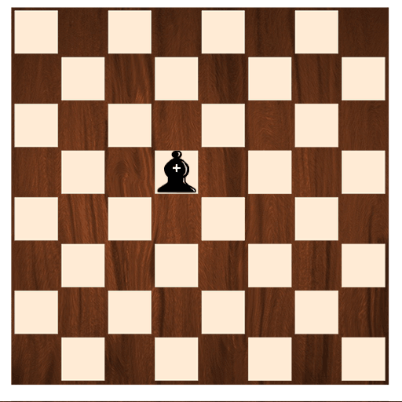

 |
|---|
El alfil es una pieza elegante y versátil en el ajedrez. Cada jugador tiene dos alfiles, uno
que se mueve por las casillas blancas y otro por las negras. Su movimiento es diagonal,
lo que le permite recorrer grandes distancias en un solo turno, siempre que no haya
piezas que bloqueen su camino.
Aunque el alfil no puede cambiar el color de las casillas por las que se desplaza, su
capacidad para controlar largas diagonales lo convierte en una pieza clave para la
estrategia, especialmente en posiciones abiertas. Cuando trabaja en conjunto con otro
alfil o con la dama, puede crear poderosas combinaciones ofensivas. El alfil es símbolo
de precisión y planificación en el tablero.